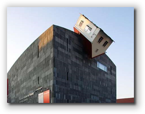
In earlier lessons, you worked with runtime errors, which are often caused by meaning one thing, but saying quite another. Such logical or semantic errors must be carefully and systematically expunged from your code.However, runtime "errors" are not always the result of logical mistakes. Sometimes, runtime errors are caused by unusual—you could almost say exceptional—situations.
For instance, most of the time, when you read and write to a file, everything goes along normally. Sometimes, however, "bad things" happen; the disk may be full, for instance, or the file you want to write to may be a read-only file.
These kinds of situations are not mistakes that you've made in
your code; instead they are unusual occurances that you must
allow for. If you just assume that everything will always
go normally, your program is not very robust.
Exceptional
situations are often confused with error conditions, or
bugs, but they really are different things.
In earlier lessons, you learned how to throw an exception
when you encountered unexpected parameter values. In this lesson,
you'll learn how to handle such exceptions.
Exception-Handling Methods
The traditional way of dealing with this kind of situation is
through the use of completion codes (also known as
exit or return codes).
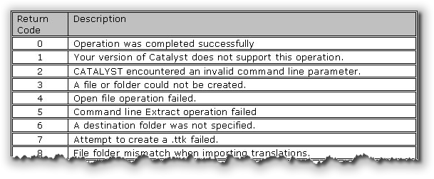
With completion codes, every time you perform an operation that may fail you must first check to be sure that the operation succeeded before you continue. If the operation fails, you have to decide whether to handle the failure at that point or to pass it back to the method that invoked the operation.A Traditional Example
Here's some psuedocode that shows the traditional method of dealing with exceptional situations. Consider the steps you need to follow to open a file, read some data, process the data, write the changed data back to the file, and finally, close the file:
Open, Read, Write, Close
GET A FILENAME
OPEN THE FILE
IF NO ERROR OPENING THE FILE
READ SOME DATA
IF NO ERROR READING THE DATA
PROCESS THE DATA
WRITE THE DATA
IF NO ERROR WRITING THE DATA
CLOSE THE FILE
IF NO ERROR CLOSING FILE
RETURN OK
ELSE
RETURN CLOSE_ERROR
ENDIF
ELSE
RETURN WRITE_ERROR
ENDIF
ELSE
RETURN READ_ERROR
ENDIF
ELSE
RETURN FILE_OPEN_ERROR
ENDIF
Observations
There are three things to notice about this code:
- Most of these operations, except for "PROCESS THE DATA" can fail, and so the program has to be prepared.
- It is very difficult to determine the normal course of action when first reading the code. The program is so taken up with what can go wrong, that it's hard to be certain you are doing the right things in the right order.
- It is very difficult to write a library that depends upon code like this, because every function in the library has to return several different error codes.
Now, let's look at an alternative, using exceptions.
The Exceptional Method
Using an exception mechanism, the same psedocode looks like this:
Open, Read, Write, Close
TRY TO DO THESE THINGS:
GET A FILENAME
OPEN THE FILE
READ SOME DATA
PROCESS THE DATA
WRITE THE DATA
CLOSE THE FILE
RETURN
IF ERROR OPENING FILE THEN ...
IF ERROR READING FILE THEN ...
IF ERROR WRITING FILE THEN ...
IF ERROR CLOSING FILE THEN ...
Compare this code to the previous code, and you'll immediately see that the code that uses an exception strategy:
- Is shorter and easier to read.
- Makes the normal logic—what you are actually trying to do with the method—its focus. In the traditional method, the error-handling often obscures the normal logic.
- Allows you to handle an error or pass it back to the caller. Using exceptions, the caller is not forced to manually pass errors back up the "chain" of command. This is done automatically making it very easy to implement a centralized error-handling strategy.
In Java, when an exceptional situation occurs, an object is created and passed to your error-handling code. In this next section, you'll look at the most common of the Java exception-handling classes.
Exception and Error Objects
In Java, when an exceptional situation occurs—if you try to write to a
file that cannot be written to, if you try to write past the end of an
array, or if you try to divide by zero, even though your mother warned
you not to—Java will create one of two types of
Throwable objects: an Error object or
an Exception object.
Java then takes that Throwable object and
throw it right back up the call stack where the method
was called from.
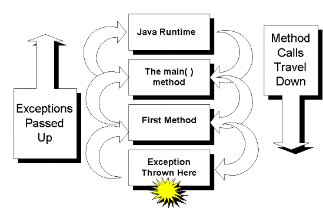
Throwable object, by
catching it.
Types of Exceptions
This illustration shows a small portion of Java's exception hierarchy:
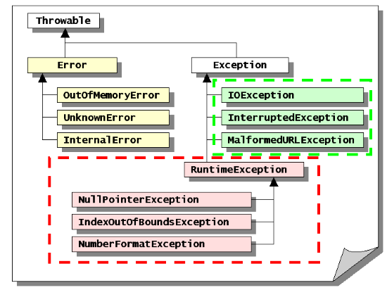
Throwable has two subclasses, Exception
and Error.
The Exception side of the familiy is further divided
into those exceptions that are checked, (represented by
the green-shaded classes in the illustration), and those that
are unchecked, (represented by the pink-shaded classes).
We'll talk more about the distinction between checked and
unchecked exceptions shortly.
Error Objects
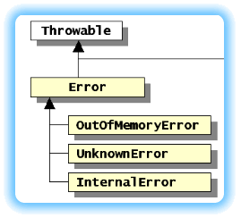
AnError is an unusual situation, like the other
exceptions, but it is the kind of situation that has no easy
solution. If, for instance, the JVM throws an
InternalError, there is nothing you can put in
your code that will cure it.
Because of Java's reliance on automatic memory management and
garbage collection, an OutOfMemoryError is likewise
fatal. And, even if you could catch the wiley
UnknownError, what would you do
with it after you'd caught it?
When your program throws an Error object, it's about
to give up the ghost, and there's nothing you can do about it.
Checked and Unchecked Exceptions
If you can't do anything about the Error side of the
Throwable family, how about the
Exception side? The Exception class
represents unusual situations that you may want to handle
in your own code. Like Throwable, the
Exception class is also subdivided into two
branches—commonly called the checked and the unchecked
exceptions, as was previously mentioned.
The RuntimeException Class
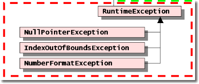
Unchecked exceptions are those thrown by the Java runtime system, and are all descended from theRuntimeException
class. These kinds of exceptional situations—accessing an
element past the end of an array, for instance, or dividing by
zero—represent unusual situations that you would normally
prevent by careful programming.
These are called unchecked exceptions because you are not required to specifically handle these exceptions in your code if they occur. Most of the time, in fact, you will not handle them at all. Some times, however, handling one of these unchecked exceptions provides an easy way to accomplish a dificult task.
Here's an example. Type a number in the
TextField shown here, and press ENTER. Now try
typing a word, like "one." What happens now?
The NumberFormatException class provides an easy way
to recover when converting between Strings and
ints using Integer.parseInt().
Writing the logic necessary to determine if a String
contains a "well-formed" number is more work than manually
converting the String to an int.
Instead of going to all that work, you can simply create a
try block, (which you'll learn to do in the next
section), and catch the
NumberFormatException that is thrown when
someone types in "one hundred" instead of "100".
Handling Checked Exceptions
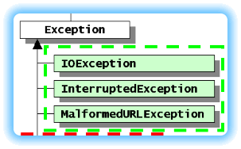
To use checked exceptions you have to do two things. First, you have to put the code that may cause an exceptional situation into atry block. Then, you provide one or more
catch blocks immediately following the
try block.
If a method throws one of these checked exceptions—an exception
not descended from the RuntimeException
class—you must handle the exception, you can't simply
ignore it like you can with the unchecked exceptions.
This next section will show you how to handle these types of exceptions.
Using try-catch-finally
In the last section,
you learned about the different kinds of Throwable
objects that are generated when an exception occurs. In this
part, you'll learn to trap those Throwable objects
and put them to work.
You'll learn:
- How to use
try-catchto respond to specific errors - How to use the
throwsclause when you want to allow the Java runtime system to handle an exception for you - How to use
try-catch-finallyto make sure that necessary portions of your program are executed whether or not an exception occurs.
Let's get started by looking at the syntax of the
try-catch statement.
If you are a long-time programmer, Java's try-catch
mechanism, shown here, looks kind of strange the first time you
see it:
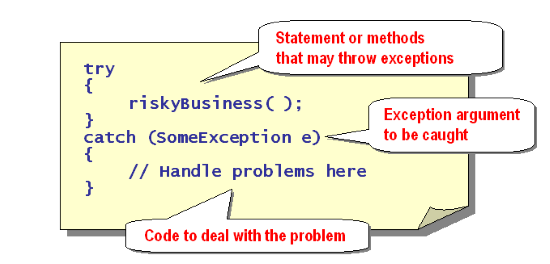
Most programming structures—loops, selection statements, method definitions—have the same basic "shape" in every programming language, even though the details might differ. That's not true with try-catch, which seems to
combine elements of loops and methods together in a package that
just doesn't "look quite right" when you first encounter it.
Once you understand how
try-catch works, though, the strangeness
goes away, and it starts to look a little bit more natural.
The try Block
The first portion of a try-catch statement is the
try block. This is the easiest part to understand.
A try block consists of the keyword try
followed by a brace-delimited block.
The braces are part of the
try-catch syntax, and are required. This is
different than a loop body or the body of an if
statement, where the braces are optional.
Inside the braces you can put any number of statements that may throw an exception:
// A try Block
int a = 3, b = 0;
int n = 0, x = 0;
try
{
n = System.in.read();
Thread.sleep(100);
x = a / b;
}
Trying Exceptions
If you use a method that throws a checked exception—that
is, an exception that is not a subclass of the
RuntimeException class—then you must put
the statement inside a try block. Common
methods that throw checked exceptions include the
System.in.read() method, (which throws
IOException), the Thread.sleep()
method, and the File constructor which you used
when you first looked at iterators.
The statements inside the try block are not
restricted to those that may throw checked exceptions; you can
place any statements you like inside the try
block. If you call a method or perform an operation that
generates an unchecked exception—say a
NullPointerException or a
NumberFormatException—then you can handle the
exception by adding an appropriate catch block,
which you'll meet shortly.
You are not required to provide a catch block
for the unchecked exceptions which may be generated inside your
try block, but you are required to provide a
catch block for each checked exception
that might be thrown.
The catch Blocks
Immediately following your try block you must supply
one or more catch blocks. The syntax for the
catch blocks looks like this:
catch (<Exception1-Class> <var1>)
{
// Handle exception1 here
}
catch (<Exception2-Class> <var2>)
{
// Handle exception 2 here
}
This is the part that gets a little tricky. Each
catch block starts with the keyword
catch, which is followed by parentheses.
Inside the parentheses you declare an exception variable
which is used to hold the exception object if that particular
exception is thrown inside the try block.
You must provide a name for each exception object, and, although
this looks like a method header, the scoping rules are somewhat
different. Each exception variable used in one
try-catch situation must have a unique name.
Following the exception variable declaration is a brace-delimited
block where you add the actions you want to take when that
particular exception is thrown. As with the try
block, the braces around the catch block
body are required. (Early versions of javac did not enforce this
restriction, so you may still see some code that has no braces
surrounding the body of the catch block).
Catching A Checked Exception
You must provide a catch block for every
checked exception that may be thrown inside your
try block. Let's continue the example we started
earlier. Because you know that System.in.read()
throws an IOException, and that
IOException is a checked exception,
you can add a catch block like this:
// A catch Block
int a = 3, b = 0;
int n = 0, x = 0;
try
{
n = System.in.read();
Thread.sleep(100);
x = a / b;
}
catch (IOException ioe)
{
System.out.println("No read()");
}
To compile this code, you must import the java.io
package, where IOException is defined. Once you do
that, you can recompile. When you do, here's what you'll see:
C:\MyFiles\Unit12> javac TryCatch.java
TryCatch.java:15: Exception java.lang.InterruptedException
must be caught, or it must be declared in the throws clause
of this method.
Thread.sleep(100);
^
1 error
As you can see, the Thread.sleep() method throws an
InterruptedException. This is a checked exception,
so you must catch it as well.
A Second Checked Exception
Let's add a catch
block for InterruptedException and see what happens.
// A Second catch Block
int a = 3, b = 0;
int n = 0, x = 0;
try
{
n = System.in.read();
Thread.sleep(100);
x = a / b;
}
catch (IOException ioe)
{
System.out.println("No read()");
}
catch (InterruptedException ie)
{
System.out.println("No sleep()");
}
Because InterruptedException is part of the
automatically-included java.lang package, you don't
have to add any new import statements. You must
make sure that your new exception variable has a different name
than the first, however, or Java will complain that a variable
with that name already exists. In the example, the new variable
is named ie instead of ioe like
the first.
Catching an Unchecked Exception
Once you do that, the program compiles without error. If you put
this code into a console-mode application and run it, however,
this is what you'll see:
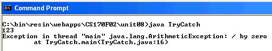
As you can see, an
ArtithmeticException is being
thrown because we are dividing by zero. Since
ArithmeticException is a sublcass of
RuntimeException, it is unchecked. The Java
compiler does not require you to catch
it, nor do you have to place the code that causes the exception
inside a try block. If you move the line
x = a / b;
outside of the try-catch, the program runs just the same.
Although you don't have to use try-catch with
unchecked exceptions, you certainly can. If you add a
catch block for ArithmeticException
to your program, you can catch and handle the divide-by-zero
exception in your own code.
Generally, you don't want to do this,
because runtime exceptions usually indicate a programming error
that should be fixed. For certain tasks, however, such as
checking to see if a String is properly
formatted as a number by using NumberFormatException,
catching an unchecked exception is the smart way to go.
Exception Matching
Because the various exception classes are arranged in a
hierarchy, it is possible to catch several exceptions
using a single catch block. If, for instance,
you add a catch block for Exception, the
superclass for all exceptions, then your catch block
will intercept every exception that can be generated.
(This is not a good idea, by the way.)
You can use this hierarchy of exceptions to handle certain
exceptions and to defer handling others, like this:
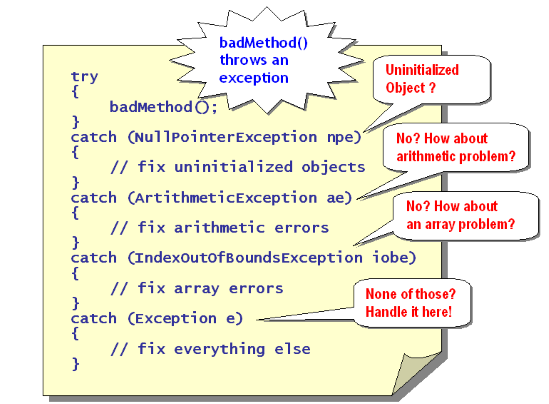
When an exception occurs, thecatch blocks are
searched in order, looking for a match. That means, you
should place your most specific catch
blocks first, and the more general ones later.
If you place your general (superclass) catch blocks
first, then the more specific (subclass) catch
blocks will never be searched.
Throwing Exceptions
So far, we've talked about catching exceptions. Let's look at this from another angle, though. How can you generate an exception in your own code?
Actually, you've already done this in an earlier lesson, and, as you saw there, it's pretty easy. Suppose you had a factory method that produced Widgets. To create a Widget, you pass a single int argument telling the factory what kind of Widget you want. The only valid arguments are 1 through 4. Anything else should produce an exception.
To do this, you use Java's throw statement, along
with the IllegalArgumentException class like this:
public Widget makeWidget(int widgetType)
{
// only valid types are 1…4
if (widgetType < 1 || widgetType > 4)
throw new IllegalArgumentException(“Invalid type”);
// Remaining code is skipped when exception thrown
}
When you call this method with an illegal argument, the if
statement creates an IllegalArgumentException object, with the
error message "Invalid type", and throws it up the call stack.
Although we used IllegalArgumentException in this example,
we could have used RuntimeException or any
RuntimeException subclass. These classes are not
checked exceptions, which means that users can call the
makeWidget method without putting it in a
try-catch block.
The throws Clause
Although you've already learned how to throw an exception, One of the beauties of Java's exception mechanism is its flexibility. If you decide that you don't want to handle a particular exception, then you don't have to: you can pass it, like a "hot-potato", back to the Java runtime system, and let Java handle it.
Here's how that works. Suppose you want to write a method for a
console-mode application that reads integers from the keyboard.
You want the method to return an int if it succeeds,
but, if the user types in "cat" or "100", you don't want to be
bothered correcting them. You're happy to let Java do that:
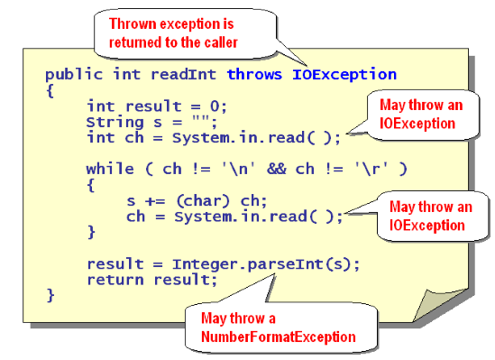
As you can see from the illustration, there are two possible things that can go wrong inside your method. TheSystem.in.read() method, used to read from the
keyboard, can throw an IOException. Also, the
Integer.parseInt() method can throw a
NumberFormatException.
Because NumberFormatException is an unchecked
exception, you don't have to do anything to pass it on to the
Java runtime. IOException is a different matter.
If you try to use System.in.read() in your code
without placing the statement inside a
try-catch block, then Java will not
compile your code.
You don;t have to use try-catch for
IOException, however. Instead, you can defer to the
caller of your method by adding throws IOException
to the method definition. This means that any method which calls
readInt() must place the call in a
try-catch block, or throw the
exception as well.
Note that the throws clause, which is added to a method header, is different than the throw statement, which causes an exception to be generated. We used the throws statement in Unit 10 when checking parameters in constructors.
Throwing Multiple Exceptions
If you wanted to call the Thread.sleep() method inside
the readInt() method, you would have to add the
InterruptedException to your thows
clause as well, like this:
public int readInt() throws IOException, InterruptedException
{
// Code here
}
If you don't want to be bothered with handling
any exceptions at all, however, you can simply use
throws Exception to your main()
method, and be done with it.
Exception Strategies
When should you use try-catch and
when should you rely on the throws clause? Here
are some simple guidelines that might help you:
- If you know how to handle a situation, use
try-catch. - If you don;t know how to handle an error, or, if you
think there may be situations where users of your code will
want to handle an error differently, then use
throws.
In any event, you should make sure you use exceptions for exceptional situations only. Don't let exception handling make up for sloppy programming. You should never, for instance, rely on exception handling to tell you when you have exceeded the bounds of an array.
The finally Clause
As you've just seen, when an exception is thrown
in a try block, program control jumps to the
catch block that handles that particular exception.
Sometimes, however, this can lead to problems because code necessary for managing resources may be skipped. For instance, every time you open a file, you should close the file. Files are an operating system resource that must be manually returned to the O/S by closing the file. But, where should you put the code to close the file?
Where to Close the File?
Here's an example:
A Problem with try-catch
try
{
openFile();
readData(); // What if exception thrown here
closeFile(); // This is skipped
}
catch (IOException ioe)
{
// closeFile() not executed if no exception
}
// closeFile() possibly executed
As you can see, there are three possible places where the call
to closeFile() can go:
- In the
tryblock, followingreadData() - In the
catchblock - After the
try-catchblock
Each of these locations has a potential problem:
- If you put the code in the
tryblock, then it will not be executed if an exception is thrown in thereadData()method. - If you put the code only in the
catchblock, it won't be called unless an error occurs. - If you put the code after the
try-catchblock, and thecatchblock terminates the program, you'll have failed to close the file as well.
To fix this, your first inclination is probably to put the code
in both the try and catch blocks,
even though this results in duplicated code. A better
solution, however, is to place the code, once, in a
finally block as shown here:
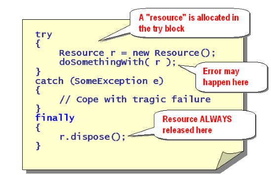
The optionalfinally clause, will always
be called, both when an exception is thrown and when
the code executes normally.
Use the finally clause to guard against resource
depletion of items like file handles and graphic context handles.
Coming Up ...